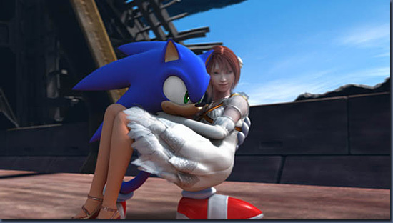

みなさんこんにちは。
今回はソニックのクールさについてお話ししたいと思います。
みなさんは、ソニックが登場したときのキャッチコピーご存知ですか？
「生意気でゴメン」なんです。
このゴメンと謝らねばならないほどのクールさ・・・うーん難しいですよね。
あと、そもそもクールってどういうことなのだろうか？アメリカにいくといろいろなことに対して、みんな「ＣＯＯＬ」ってよくいうし、いわゆる日本で使う「クール」と違うの？などなど悩みながら、今までのソニックを見返しました。
昔のソニックは、直接しゃべるようないわゆるイベントシーンのようなものはなかったですよね。となると、ゲーム中の動きとか、取扱説明書に書いてあるソニックの性格とかがソニックのクールさを現していたということになります。
動きでみるソニックのクールさといえば、一番はじめに思いつくのが、タイトル画面で指を横に振る動き。あれは当時のソニックでクールさの象徴的な動きだったと思います。そして、ソニックがすばやくいろいろな敵をやっつけたり、速くてリアクションがかっこいい。
あと取扱説明書には、こういうことが書いてあります。「自信家で気分屋、誰にこびることもない」これは、いわゆる正義のヒーローっぽい感じではなくって、誰にもこびないんだけど裏切らずに助けてくれるキャラクターってことだとおもうのですが、こういう部分もソニックの性格的なクールさなんだと思いました。
ただ、そういう要素に気をつけて作っていくということはしていたんですが、今もソニックの動きとかそういう性格とかっていうのは引き継いで来ているし、単純な進化では、当時ほどのインパクトが出しずらいなと。
そういった中でソニックのクールさをより引き立てる方法として、人間の女性「王女エリス」と組み合わせてみようというアプローチを考えました。
テイルスやナックルズ、シャドウなんかと話しているソニックはおなじみなんですが、人間とかかわった時のソニックっていうと、アニメの『ソニックＸ』ぐらいだと思います。単順に人間の女の子とソニックが絡むということ自体も新鮮だとは思うのですが、ソニックが女の子とどう接するかを表現する事で彼のクールさをより具体化させる事が出来るかと思ったんです。
そして、その女性をただの女の子ではなく、王女にしたのも、ソニックは身分というものに囚われずに振舞えるのか、こびずに自分を貫く事ができるのかを見てみたい、と。
今回は、ソニック、シャドウ、シルバーの３つのシナリオがあるのですが、ソニックシナリオでは、エリスとの絡みがメインのテーマとなってきます。これ以上話すとネタばれになってしまいますので詳しく書くことは出来ませんが、エリスと接したときのソニックに注目してもらいつつ、ソニックのクールさを感じてもらえればと思います。

王女エリスと接したときのソニックに注目！
ということで２回にわたって『SONIC THE HEDGEHOG』というタイトルが目指した「スピード」と「クールさ」における原点回帰についてお話ししました。それが実現できたかどうかについては、実際にゲームを買ってもらって（笑）、確認してもらえればと思います。
次回は、海外でも人気の高いキャラクター「究極の生命体シャドウ」についてお話ししたいと思います。

1997年セガ入社
『ソニックＲ』、『ソニックアドベンチャー』に参加後、『サンバＤＥアミーゴ』『ジャイアントエッグ』などのディレクターを務める。